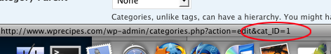

“Newscast Wordpress Theme” Documentation by “Kriesi” v1.0
“Newscast Wordpress Theme”
Created: 07/03/2010
By: Christian "Kriesi" Budschedl
Email: Kriesi
Informations about Updates and New Themes are always announced on Twitter and Facebook. Twitter updates are usually more up to date, facebook updates are more detailed and easier to follow :)


Hello! First of all I would like to thank you for purchasing my theme! :)
If you have any questions that are beyond the scope of this help file, please feel free to ask your question on the item discussion page.
This file will teach you how to set up and use the “Newscast” - 4 in 1 Wordpress Theme.
This file is really extensive so you might think the theme is hard to use.
actually its not, you probably just might jump to the options page and explore everything yourself, this file is more of a reference work if you do not know what to do, or if you are not familiar to wordpress.
Have fun with your new theme! best regards
Kriesi
Table of Contents
- Folder Structure
- Installation
- HTML Structure
- CSS Files and Structure
- JavaScript
- PSD Files
- Image Sizes
- Sources and Credits
A) Folder Structure - top
- Newscast → all PHP template files needed to run the wordpress theme as well as the main stylesheet (style.css)
- JS →Custom Javascript files, the prettyPhoto Lightbox clone and the jQuery library
- CSS → 4 Stylesheets, 1 for each skin (contains color and background information, as well as borders)
- Images
- Skin1-4: Images for the different skins
- Files → Placeholder Pictures you can use
- Cache → Folder to store images that are not resized by wordpress but by timthumb on the fly (only used on older installations)
- Framework → PHP classes and Functions that are needed to make the theme run
- theme_options → constuction files for the backend options
B) Installation - top
The Theme comes with 3 different styles which can be activated at your wordpress admin panel.
You can either choose to upload the theme to your server via ftp (only upload the unzipped folder „newscast“ into the folder wp-content/themes/ ) or via wordpress upload function. to use the upload function of the wordpress admin panel make sure to ONLY upload the “Newscast” folder and not the whole archive file that you recieved by themeforest.
Notice: if you are new to wordpress and have problems installing it you might want to check out this link: http://codex.wordpress.org/Installing_WordPress
After that is done activate the theme as you would activate any other theme at Appearance->Themes.
“Newscast Ligh”t is now the active theme.
If you are working on an Installation that already has images uploaded to the media folder and you want them to be resized automaticaly please make sure to make your cache folder writeable for the resizing script. If you do not know how to set the permission please google it, every ftp program has a slightly different approach. I would recommend googeling for „set chmod to 777 with [your-ftp-programm] (eg dreamweaver)“
If you are working on a new installation or dont plan to use any previously uploaded images as preview images you can skip the step above.
B 1) Setting up the general Options - top
 If you want to change the general Options of the Theme go to the “Newscast” Options Panel (at the bottom of your admin areas sidebar) and click it, the first thing you will notice is an option to choose skins:
If you want to change the general Options of the Theme go to the “Newscast” Options Panel (at the bottom of your admin areas sidebar) and click it, the first thing you will notice is an option to choose skins:

Just choose the skin you like best from the dropdown menu. Once you have pressed the save button at the bottom of the page the new skin will be applied to your frontpage.
Notice: If you want to further customize your skin by changing the CSS directly: the main css file is style.css within your theme-root folder. The CSS file that holds all color informations is located in your /css/ folder. Depending on the skin you have choosen you need to edit syle1,2,3 or 4.css
 Changing your Logo:
Changing your Logo:You got 2 options to change your Logo: The easiest way is to simply enter the url of your own logo file into the input field. The default Logo will be replaced as soon as you have saved the page.
The second option is to edit your CSS Files directly. Depending on the skin you have choosen you need to either edit style1.css, style2.css or style3.css in your folder /css/.
Search for the #logo selector and change the background picture.
 Set the Article Appearance of your Theme:
Set the Article Appearance of your Theme:
The Theme displays the articles posted either with a Big Preview picture and with full lenght of the content colum or it displays them with small preview picture and 50% width of the content column, always 2 beside each other.
You can choose how many should be displayed full size by changing the number within the input field and you may also choose how the articles should behave on consecutive pages by selecting one of the options in the dropdown menu. This setting gets applied to your frontpage, your category, archive and search pages.
 Adjusting your Header:
Adjusting your Header:
Besides your searchbar are 3 icons, one for your RSS feed as well as a twitter icon and an icon to your contact page.
You can change the link of the twitter icon by simply adding your account name to the twitter field, and you can also set the link url of the contact icon by choosing a page it should link to.
 Setup Google Analytics Code
Setup Google Analytics Code
Last thing on the general options page to do is to add your google analytics code if you want to. Just add the code to the textarea and google will start tracking ;)
B 2) Setting up the Menus of your site - top
The theme comes with 2 menus and therefore 2 menu managers in your Newscast backend:
The page menu and the category menu. Both work exactly the same way, the page menu manager will populate the small upper navigation that is intended to be used for a Home link, about us or other static pages. The category menu manager will populate the more prominent category menu below, that is intended to be used for the categories on your site.
When you first click on one of those „Menu Manager“ in your Sidebar you will see that there is a blank table and a button that lets you create new items.
If you press the button you get a new blank menu item.
The first Input field shows the Name of your Item in the Menu, the second input field is a description line that is added to your category-menu top level items. sub level items or page menu items don‘t need this. To choose a link for your menu item change the select box ‚linking Method‘ and choose where you want to link (manually, page or category are your options)
You can add any number of links, if you got more than one you can also arrange them with the arrow icons:
 If you press the right arrow the item will become a sub navigation item of its ancestor. you can undo this by pressing the left arrow. The Menu supports up to 8 Sub Levels, which is more than you should ever need :)
If you press the right arrow the item will become a sub navigation item of its ancestor. you can undo this by pressing the left arrow. The Menu supports up to 8 Sub Levels, which is more than you should ever need :)
Changing the item order is done with the up and down buttons.
Please be aware that you can only change the order of an item if there are other items on the same level or sublevel. You can also only move items within its current level. If you would need it positioned within another level you would first need to outdent it, then move it and then indent it again.
The red X of course deletes an item with all its children.
Changes will only be saved once you press the save button, so if you accidently delete a whole tree you can simply reload the page without saving.

B 3) Setting up the Sidebar and Footer Area - top
Sidebars, as well as the footer are widgetized areas, which means you can controll the output enirely fromyour wordpress backend. The widgets can be applied at appearance/widgets in your wordpress admin section. But before you do that you can change some theme specific options at Newscast Options/ Sidebar & Footer:
 First of all all you can choose how many sidebar columns you want to display, default is 2 small ones buy you can also choose to only show one big
First of all all you can choose how many sidebar columns you want to display, default is 2 small ones buy you can also choose to only show one big

 Next step is to select those categories and Pages that should get a unique set of sidebars. For every category or page choosen here the theme will add a new Sidebar Widget area at appearance/widgets. Once you have choosen the pages and categories press save and head over to the widget section of wordpress.
Next step is to select those categories and Pages that should get a unique set of sidebars. For every category or page choosen here the theme will add a new Sidebar Widget area at appearance/widgets. Once you have choosen the pages and categories press save and head over to the widget section of wordpress.
You will see that the new areas just got appended to the predefined ones.
So adding these areas is easy.
However be very careful when removing widget areas that already got widgets applied to them.
Wordpress doesn't remember where it stored widgets by name, it stores this information by number. So if I would add a text widget to Contact here (Nr6), and then delete the content widget area the widgets would then be in Jobs. (previously in 7, now the new 6)
 Last step todo is to choose if you want the theme to apply dummy widgets to either your sidebar or footer if you didnt set a widget manually. Whatever option you choose here. once you have set a widget for a page or category the default dummys wont be added to this page any longer.
Last step todo is to choose if you want the theme to apply dummy widgets to either your sidebar or footer if you didnt set a widget manually. Whatever option you choose here. once you have set a widget for a page or category the default dummys wont be added to this page any longer.
The footer widget area is not as complex as the sidebar area, there are only 3 widget areas that are shared among all pages and categories. The default dummy content for the footer can be found at the bottom of footer.php just in case you want to change it or improve the footer itself.
B 4) Setting up the Front page - top
 First you need to choose which front page slider you want to use for your theme. You got $ Options.
First you need to choose which front page slider you want to use for your theme. You got $ Options.
Accordion, Crossfade Slider, newslist Slider and none.
 Populate the slider
Populate the slider
by choosing categories. Posts within these categories will be used to create the different slides.
 Number of slides
Number of slides
Here you can choose how many slides you want to display. I would recomment to use only 4 -7 when using accordion or crossfader. The Newslist slider works best if you got 8+ Posts to display.
 Autoplay Options
Autoplay Options
The Accordion and Crossfade Slider got the option to automatically start the slideshow. Once a user interacts in any way with the slider the autoplay is stopped.
The Duration tells the slider how long each image should be displayed, the transition speed how fast the transition animation should be executed.
 Mainpage Content Options
Mainpage Content Options
By default the Mainpage displays posts from all categories. since you sometimes want to exclude certain categories from the mainpage you can set them here. You can also choose if this categories should be removed from the "categories" sidebar widget.
B 5) Setting up the Contact Form & News Submission Form - top
 Setting Up the contact form is really easy: Best practice is to first create a blank page with the name of your choice, then add that page to your main menu with the Menu Manager and after that is done open Contact Page settings and choose the page at the select box. You can also choose the E-Mail adress the message gets sent to.
Setting Up the contact form is really easy: Best practice is to first create a blank page with the name of your choice, then add that page to your main menu with the Menu Manager and after that is done open Contact Page settings and choose the page at the select box. You can also choose the E-Mail adress the message gets sent to.
FAQ Contact: If your contact page seems to work on the front-end but doesnt deliver a mail, be sure that your server supports the sendmail protocol. (ask your server admin if this is turned on)
If you cant activate it I would recommend to get a plugin for your contact page, like cformsII. Also if you want to do major modifications to the form, like adding a Captacha I would recommend to use a Plugin (cforms II also supports this) Using a plugin is by far the fastest way to pull this off :)
 Submit News Options
Submit News Options
The submit News button at the header can be used to give visitors the chance to submit interessting news by mail, which can then be posted by you.
The options are prettyself explanatory: you can choose if the option should be available, if only registered users can submit them, you can define the link text, as well as the E-Mail adress that should recieve the mails.
B 6) Using custom Widgets - top
 The Theme comes with 2 custom widgets: One for Managing 125 x 125 Advertising Images and a widget that lets you display blog posts from one or more articles within your sidebar or your footer.
The Theme comes with 2 custom widgets: One for Managing 125 x 125 Advertising Images and a widget that lets you display blog posts from one or more articles within your sidebar or your footer.

 Both of them are easy to use: The Advertising widget just needs a title (at least for the first image, the others dont need one) aThe URL to an image that is 125 * 125 px in size and the referal link that should get applied to the image.
Both of them are easy to use: The Advertising widget just needs a title (at least for the first image, the others dont need one) aThe URL to an image that is 125 * 125 px in size and the referal link that should get applied to the image.
The Sidebar News widget needs a title as well, the number of posts to display and which post from which category you want to display. To choose the categories you need to enter the IDs of those categories. If you dont know how to find those IDs:
Once you're logged in your WordPress dashboard, go to Manage and then in Categories.Simply put your mouse cursor on the "edit" link related to the category you want to know the ID and look on your browser's status bar: As you can see on the screenshot below, 1 is the id of the category (quicktip and image by http://www.wprecipes.com)
If you have done everything correctly it should look like this.
{kind=link}
B 7) Adding Content (how to create portfolio entrie and, preview imagss) - top
 Writing a Post or page doesnt really differ from doing so when using other themes. You add a title, add some content, and categories and thats about it. In Newscast you need to do 2 more things:
Writing a Post or page doesnt really differ from doing so when using other themes. You add a title, add some content, and categories and thats about it. In Newscast you need to do 2 more things:
- Write an excerpt
- Set a previe Picture
Both is really easy. When writing a post and scrolling down the textarea you will notice a textarea labeled excerpt. this is what is used to controll the small excerpt when you look at posts on your mainpage or other overwiev pages with more than one post. If you dont fill in an excerpt wordpress will take the content you added to the basic content area and cut it off after a few sentences.
 Setting a preview Picture
Setting a preview Picture
On the right border of your page you will find a field called Post Thumbnail. Once you click set thumbnail the media uploader will open and you get to upload a new image or choose an existing one. Once you have choosen dont klick the "add to post" button. Click the "set thumbnail" link instead and you are done.
 Once you have added the image it should appear similar to my example:
Once you have added the image it should appear similar to my example:
When uploading a picture all different thumbnails needed for the theme are generated by wordpress. However this only happens if you add new pictures. if you are using pictures that were already uploaded before the Newscast theme was activated, wordpress cannot resize them. Then the timthumb php "on the fly resizer" kicks in as a fallback. Make sure to make the cache folder writeable if you want to use older images.
Depending on the slideshow you want to use, make sure that images are at least 960 * 320 when using the crossfading slider and 700 * 320 when using one of the other sliders.
Once you have set the post thumbnail you can also set some additional behaviour: what should happen when a user klicks the image (open in new window, open bigger version in lightbox, nothing) This behaviour then gets applied to the image when you are not viewing a single page/post. When viewng a single Page/Post klicking the image will always open the large version or the video in a lightbox.
You can also set an image or video to override the "large version". Which means you could set an image of a snowboarder as thumbnail for example and when the user clicks that image you could show him another image in the lightbox preview, or even better, a video.
How to enter an Image/video link at the " Full Size Pic/Video Input field"
You have two options when adding a link: either manually by typing the full address (eg: http://www.yourdomain/path/to/image.jpg)
or you can press the button next to the input field. the media library will open, you can upload a new image or choose an existing one and then as if you would add an image to your post press the „add image to post“ button. The lightbox will close and instead of addint the image to the post the image url will be added to the input field.
Adding videos can get a little more tricky since you need to add a height and width for most of the video links with your url, so entering by hand is recommended here.
Some examples of valid links would be:
if adding an swf file you need to pass height and width by appending ?width=792&height=294
http://www.adobe.com/products/flashplayer/include/marquee/design.swf?width=792&height=294
if adding a youtube video you dont need to pass it:
http://www.youtube.com/watch?v=qqXi8WmQ_WM
adding a vimeo video doesnt need it either:
http://vimeo.com/1084537
however if you want a size that doesnt match the default size you can pass it and the lightbox will adjust:
http://vimeo.com/1084537?width=850&height=450
more examples can be found on the homepage of the lightbox creator:
http://www.no-margin-for-errors.com/projects/prettyphoto-jquery-lightbox-clone/
Using Shortcodes
 The theme comes with an extra shortcode for pullquotes. if you are writing a Post or page and you wrap a textblock within these shortcode you will create a pullquote:
The theme comes with an extra shortcode for pullquotes. if you are writing a Post or page and you wrap a textblock within these shortcode you will create a pullquote:
[pullquote]
This is a pullquote that is left aligned
[/pullquote]
[pullquote right]
This is a pullquote that is right aligned
[/pullquote]
C) HTML Structure - top
The HTML is valid xhtml 1.0 strict and comes with predefined classes for common elements needed in web design.
All templates share basic elements like header, footer, main, and entry so be carefull when editing those or adding/changing the CSS for those ids and classes :)
D) CSS Files and Structure - top
The CSS for the theme is split into two files: one that holds the basic markup for layout and one that contains the specific color information for the 4 different styles. The fist one (style.css) is shared among all skins, but each skin has
a separate second file for the aforementioned color information. If you want to create a unique layout just change the settings in on of the stylessheets of folder "CSS"
To change the color scheme open the html template files file and look into the html head, here you will find style1.css linked and the others as comments. just exchange the one linked with one of the files in the comments and you switched color scheme.
Special classes to note:
.ie6fix: a class that helps ie 6 render elements contained within the class with transparent background. Apply to.png files to make them IE6 compatible
.preloading_background: add this class to elements that hold images to show the neat loading animation before the image gets displayed.
CSS file notice:
1.) To make everything work with older browsers like ie6 there are some CSS tricks applied in the stylesheets. If you see a property like this:
margin-left:0px !important; margin-left 20px;
It is to apply a left margin only to internet explorer 6 which interprets the !important rule the wrong way.
E) JavaScript - top
The theme uses advanced jQuery functions. You do not need to know how to use jQuery to activate them, almost everything is controlled by wordpress.
If you really want to change some options by hand just change the functions calls located at the top of custom.js that are wrapped within the jQuery(document).ready function.
The following functions are available:
1.)Internet explorer png fix
If you want to use additional transparent png files just add the class "ie6fix" to the element that has the image applied to make internet explorer 6 render it correctly.
2.) Jquery Improved dropdown menu(k_menu())
This improves the css dropdown menu with animation and ie6 compatibility
3.) Lightbox: prettyphoto (my_lightbox("a[rel^='prettyPhoto'], a[rel^='lightbox']");)
The prettyPhoto lightbox comes with 4 styles. each link that has the attribute rel="lightbox" or rel="prettyPhoto" will trigger that lightbox.
The lightbox is capable of displaying images as well as movies and flash files. Documentation can be found here:
http://www.no-margin-for-errors.com/projects/prettyPhoto-jquery-lightbox-clone/
4.) The slideshows: Each slideshow has some unique values you can set, like autorotation, and transition speed. Everything is documented within the custom.js file so I would recommend to take a look within that file if you want to change somehting :)
5.) Image preloader:
jQuery('#main').kriesi_image_preloader({delay:200});
This preloader loads all images within div main and once loaded they fade in smoothly. If you want to preload other elements as well just add them to the selection like this:
jQuery('#main, #footer, .somediv').kriesi_image_preloader({delay:200});
F) PSD Files - top
Among with the theme come all psd files needed to edit the different skins. With these psds you can even create your own unique Newscast skin.
G) Image Sizes- top
Slider pics Accordion Slider + Newslist Slider: 700px X 320px
Fadeslider: 960px X 320px
Big Preview pics: 180px X 180px
Small Preview pics: 60px X 60px
H) Sources and Credits - top
- External scripts and resources used:
- DRF Icon set
- Social Bookmark Icons
- lightbox plugin
- logo font: Nevis
- Woo Icon set
- flickr creative commons library pictures by: codyR, kretyen, mescon, obskura, freya23
Once again, thank you so much for purchasing this theme. As I said at the beginning, I'd be glad to help you if you have any questions relating to this theme. No guarantees, but I'll do my best to assist. If you have a more general question relating to the themes on ThemeForest, you might consider visiting the forums and asking your question in the "Item Discussion" section.
Kriesi